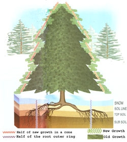
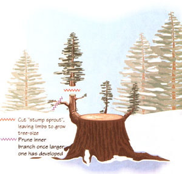
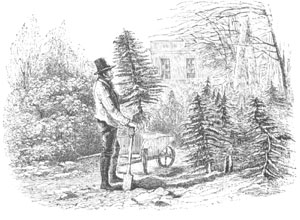

How you truly can "save a tree."
I don't think I've spent good money on a Christmas tree but once or twice in 30 plus years of country living. When I did, it was only because there wasn't time amongst the holiday swirl to track down the big kids, pack the little ones into snowsuits and boots, round up the bucksaw, sled, dogs and all, and mount a proper tree- cutting expedition to the woods. A decade ago, trees were being sold by the Boy Scouts in the square of a central New England country town for about $35. The same tree hauled south a few miles to New York City brings $100 and up these days.
Unless you just can't avoid it, why spend the money if you can grow and harvest your own? If you don't kill a tree but instead transplant one (with a brief holiday stopover in the living room) or cut a "stump sprout," you're saving a tree in the bargain.
Doomed Seedlings
Young pine, fir, and spruce trees need a shady nursery to grow up in and any evergreen woods and most hardwood forests will contain many young evergreens ranging in size from single-spike seedlings to adoles cents 10 to 15 feet tall. However, you'll find few grown tall enough to threaten the mature ones' dominance of available sunlight. The butt-to-butt stand of mature trees in a climax shades them out. Of the millions of seeds they scatter each year, most are eaten by the birds and beasts that the trees shelter. Only a tiny fraction of those that do manage to sprout and grow for a few years will be there when an ancient or diseased nursse tree falls and opens up a spot of sun in the forest canopy. And then only the single one or two strongest of the many contenders on the forest floor will fill the available space. Ninety-nine plus percent of forest seedlings are doomed anyway, and your cutting one for Christmas matters not a bit to the forest.
In reaching for the sun, forest evergreens grow thin, spindly, and offshaped compared with commercial specimens. Such trees are planted in rows, grow in full sun, and are pruned for five years or more for a conical shape with close limbs and dense foliage. But Christmas is for kids and a spindly tree won't bother them. When ours were little, a sparse tree offered more places to put birds nests and gave us an excuse to add more popcorn and raw currant ropes, homemade paper chains, and flour paper on balloon ornaments.
A Small Price for Happiness
I always felt that the joy Santa Claus, Rudolph, sparkling tinsel, and twinkling lights bring to little children and the good cheer that they pass on to their elders more than justified cutting down a few trees. Enjoying the tree and then using the fragrant-burning needles, limbs, and trunk for stove fuel or returning it to the forest floor to molder quietly into loam did no real damage - it was just borrowing a bit of nature's bounty for a while and barely interrupting the natural cycle.
But like yourself, perhaps, I'm midway between the parent and grandparent generation. Sad in one sense and greatly re lieved in another, nobody in the immediate family is young enough to believe in Santa anymore. And though I never gave it a second thought when the children were young, I don't feel justified in killing a tree for a few weeks' decoration in a small, childless house. It seems frivolous-even if it was a plantation-grown tree that would never have seen life without being planted by a tree framer or a wild tree doomed to being shaded out in the woods.
No, saving one Christmas tree a year isn't a big deal when whole mountainsides are being clear-cut in Washington State, thousands of acres of Colorado burn each summer, and even more tropical forest is slashed and burned each day around the equator.
But it makes me feel good. It saves $35 or more as well.
How to Save a Tree
Whatever the reason, I dig a young evergreen out from the deep woods each fall, invite it into the house for a week or two around Christmas, then plant it out in full sun, around the boulder-strewn end of the pasture meadow. The land is so rocky there that you can't mow a crop of hay off it with anything but a long scythe with a short blade. But evergreen trees are notable rock perchers. These refugees from the woods will force their roots between the stones and enjoy themselves for a century or two.
When prospecting for young trees, you'll want to pick individuals that have grown a single trunk in a more or less regular shape. Skip deformed or multiple-trunk trees-with trunks and limbs broken by falling limbs and clumsy passersby. Many will outgrow their deformities if given twenty years' undisturbed growth, but Santa prefers symmetrical trees.
Don't try to move a hemlock (an evergreen with branches arranged irregularly around the trunk; mature trees have cinnamon-red and well-furrowed bark, flat needles with rounded or notched ends, and small cones). You can transplant any other small evergreen from the woods if you pick the right time of year and respect the tree's roots.
Any tree's root system is a mirror image of its visible growth in mass, but it is seldom the shape of aboveground growth. Most evergreens have a shallow, pancakeshaped root network, with several large root trunks growing out from the trunk in a wheel spoke pattern and through the topsoil lying just beneath the layer of dark, fluffy loam that carpets the forest. Small, fragile feeder roots grow in a dense network up into the loam to take in water. A few wiry roots go down into the subsoil for minerals. If you just jerk the tree out, feeder roots will be shucked off and all you'll get are the main root trunks. Such "bareroot" treatment is OK for tiny evergreen seedlings, but it will kill an older tree.
Feeder roots are most dense in a ring around the tree's drip line. To "tame" a tree, you prune the root system at the drip line, forcing dense root growth close to the trunk. But that takes a year at least.
To bring in a wild tree for this year's holiday, you must be sure it is stone dormant and then move it, roots and all (the reason moving a wild evergreen of any size is inadvisable, and if attempted, is a job for heavy equipment). So, wait for late fall and after the first frost-when deciduous trees' leaves have fallen. Pick a small tree of four feet high or less. Use a cutting spade with a sturdy, flat blade and a straight, sharpened tip to dig a circular slit trench. Make it a good foot deep and six inches out beyond the drip line. That's a circle four to five feet in diameter. Pry up the top three or four inches of soil and roots all around the trench and shove the spade in toward the trunk, severing roots where they dive into the ground. You may have to reach in under the disk and use a large knife or small saw to cut the larger roots.
When you have cut the root-and-soil disk free, lift one edge with the spade and work a heavy tarp in under both tree and soil (use a back-and-forth sawing motion with the edge of the tarp; you may need prying help from the spade and perhaps several flat boards). Do your best to keep roots and crumbly forest loam together (not easy) till the tarp (or tarps-you may want to work a second in from the opposite edge) is under the tree. Then, pull tarp(s), tree, and roots out of the hole and deposit in the center of a square of heavy burlap. Slip the tarps out (in short, snappy jerks that leave the roots in place). Finally, pull the burlap up in a kind of diaper and tie it loosely around the tree trunk.
I slide the hundred-pound bundle up into our high-wheeled garden cart and haul it to the house. Inside, it rests on several thicknesses of waterproof polyfilm so it can be watered daily. Tree and soil give the room a welcome pine-woodsy odor. The lump of soil and roots, hidden under an old sheet, provides a pedestal to raise a short tree to a satisfying level-and also makes the heap of presents beneath the tree seem larger that it is.
In decorating, I advise going easy with the tinsel-it is the very devil to remove from a prickly evergreen tree without knocking all the needles off. Modern tinsel lasts for ages and a be-tinseled tree looks strange outdoors.
After no more than two weeks in a dry, winter-heated room, the tree is returned to a predug hole in the meadow. Set the tree in straight, a little deeper than it was in the woods but not so deep that the trunk above where the roots begin to splay out is covered. The cambium layer beneath outer bark on the trunk must be free to breathe. The replanted tree should have its roots unbundled-just cut the twine holding the burlap around the trunk. Don't try to pull the burlap out, but do tuck all free edges down into the ground. Even a small corner of cloth exposed to the wind can wick moisture up to evaporate, drying out the root ball and killing the tree. Soak the root system well if weather is below freezing, then cover with loose soil removed from the hole. Form the soil in a shallow dish around the trunk. Tamp the surface well (but not too hard) around the roots. Especially if the soil is wet, you will squash air pockets that allow roots to breathe and permit excess water to drain away.
Root Pruning
If the live tree experiment has been a success, you can transplant more young trees out from the woods and establish a small Christmas tree plantation. To ease the transition into the house and back-for both you and the tree-prune the roots over several years so they end up concentrating into a small, easily dugup clump. You can root prune in the woods or transplant trees into the sun and cut both top and roots to size there.
The first fall, after trees go dor mant, cut the soil around each tree a good foot deep in a circle just out side the tree's drip line. The tree will replace cutoff roots inside the circle. The year after, cut a circle some six inches far ther in. Next year, cut still another slit trench farther in till each tree is concen trating root growth in an easily removed root ball about a foot and a half to two feet across and as much deep. I like to soak the soil around ends of just-pruned roots with dilute liquid fertilizer so the newly truncated roots will have a good meal. It will also ease their shock when they awake from dormancy and find their number reduced by half.
Top Pruning
Except for removing diseased and dead wood, don't prune a tree still in the woods-not even wildly errant limbs. In the dense shade, a tree needs all its foliage to soak up what sun it can get. However, for a tree's first Christmas visit-and annually after it is planted in the sun-you will want to top prune each tree into a Christmas conical shape. Few will make much new growth the year after transplanting, but once they have produced a crop of bright green new growth (and they'll do it any time of year, sometimes several times a year-not just in spring), you should reduce it all around by about half or as needed to reach an even cone shape. In particular, trim the long central spike that will extend forest-grown legginess into succeeding branch whorls-but watch that it doesn't split into a "Y" just be low the tip and try to grow a dual tree trunk.
You can try to dig up and replant a single tree every year, but it will lose vigor and die in time. You are best off rescuing several from the woods and revolving their tours of Christmas duty-bringing in the most vigorous each December. Three to five trees should suffice, with a new one added and an older one retired each year. 'they won't mind being kept pruned down to acceptable indoor size for five years or so.
Cutting off the Stump
Not all Christmas tree farmers plow the land and plant seedlings for eventual harvest. Some old-timers don't kill their trees at all, but cut "off the stump," removing second growth from established trees originally cut high enough above the butt that several strong, living branches were left on the tall stump. One or more of the surviving limbs will become leaders, arching skyward at the break from dormancy in the spring. The leaders will grow to tree size rapidly, benefiting from a mature root system.
A while back I stump-cut from a grove of small (10-15-foot, 15 -25-year-old) wild balsam firs growing in a sunny meadow beyond the spring at the bottom of our apple orchard. I'd pruned the tops (using a stepladder) over two or three years till they assumed a true conical shape and filled in. For Christmas trees, I removed the top two-thirds of a tree, cutting it off somewhere between waist and chest high. Then I trimmed the trunk down as low as I could, leaving at least three good branches near the ground. The stump sprouts all grew and the little grove will begin supplying a second generation of Christmas trees off the stump in a few years.
If a stump grows multiple leaders that are well spaced around the old trunk, it may grow several potential Christmas trees at once. Usually, one will be the more shapely and vigorous and is allowed to grow while the others are removed or pruned back. With care, one old stump can provide a succession of usable trees, one every five years or so. There's no rea son why your descendants one or two hundred years from now couldn't cut trees off your stumps.
Ideally, I suppose you will rescue trees from being shaded out in the deep woods, transplant them to sun, and in time cut Christmas trees off the stump from the most vigorous. However, it takes a tree at least a year to grow a foot in height and more like 10 or 15 years to grow a "stumpcuttable" Christmas tree-size leader. You'd have to spend most of a lifetime in one place, or come into possession of a going stump-cut Christmas tree farm. Few of us are so fortunate these days, I'm afraid.
Bought Trees
If you don't have your own woodlot, you can always buy live, nursery-grown Christmas trees. The tree is root pruned and trimmed to shape over a decade or so, then dug, balled, and driven to market. So, the cost is the same $100 and up you'd pay for a specimen lawn tree. Treat it as you would a tree you've dug yourself and, after Christmas, plant it outside.
If you plant trees permanently in the lawn of a small-acreage country place, visualize it as them as they will be a generation hence. Plant them a good 15 feet apart and with the neighbors in mind. I know of one pair of ex-Christmas trees that were planted along the property line by folks who didn't realize that, in 20 years' time, the trees would grow high enough to commit criminal trespass by shading out the north side neighbors' vegetable garden and their dwarf pear tree (planted in `75), just as it was beginning to bear.
|
 |
 |
 |